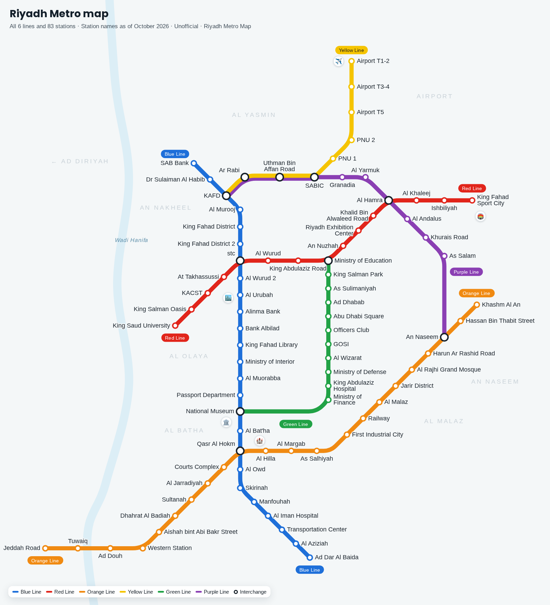

Riyadh Metro Map › Stations
Riyadh Metro stations: full list
All 83 stations of the six Riyadh Metro lines, with their lines and interchanges. Several stations carry sponsor names; find any station below.

Stations with other or former names
| Current name | Other or former names | Lines |
|---|---|---|
| stc | Olaya | Blue Line, Red Line |
All stations A–Z
| Station | Lines |
|---|---|
| Abu Dhabi Square | Green Line |
| Ad Dar Al Baida | Blue Line |
| Ad Dhabab | Green Line |
| Ad Douh | Orange Line |
| Airport T1-2 | Yellow Line |
| Airport T3-4 | Yellow Line |
| Airport T5 | Yellow Line |
| Aishah bint Abi Bakr Street | Orange Line |
| Al Andalus | Purple Line |
| Al Aziziah | Blue Line |
| Al Bat'ha | Blue Line |
| Al Hamra | Red Line, Purple Line |
| Al Hilla | Orange Line |
| Al Iman Hospital | Blue Line |
| Al Jarradiyah | Orange Line |
| Al Khaleej | Red Line |
| Al Malaz | Orange Line |
| Al Margab | Orange Line |
| Al Muorabba | Blue Line |
| Al Murooj | Blue Line |
| Al Owd | Blue Line |
| Al Rajhi Grand Mosque | Orange Line |
| Al Urubah | Blue Line |
| Al Wizarat | Green Line |
| Al Wurud | Red Line |
| Al Wurud 2 | Blue Line |
| Al Yarmuk | Purple Line |
| Alinma Bank | Blue Line |
| An Naseem | Orange Line, Purple Line |
| An Nuzhah | Red Line |
| Ar Rabi | Yellow Line, Purple Line |
| As Salam | Purple Line |
| As Salhiyah | Orange Line |
| As Sulimaniyah | Green Line |
| At Takhassussi | Red Line |
| Bank Albilad | Blue Line |
| Courts Complex | Orange Line |
| Dhahrat Al Badiah | Orange Line |
| Dr Sulaiman Al Habib | Blue Line |
| First Industrial City | Orange Line |
| GOSI | Green Line |
| Granadia | Purple Line |
| Harun Ar Rashid Road | Orange Line |
| Hassan Bin Thabit Street | Orange Line |
| Ishbiliyah | Red Line |
| Jarir District | Orange Line |
| Jeddah Road | Orange Line |
| KACST | Red Line |
| KAFD | Blue Line, Yellow Line, Purple Line |
| Khalid Bin Alwaleed Road | Red Line |
| Khashm Al An | Orange Line |
| Khurais Road | Purple Line |
| King Abdulaziz Hospital | Green Line |
| King Abdulaziz Road | Red Line |
| King Fahad District | Blue Line |
| King Fahad District 2 | Blue Line |
| King Fahad Library | Blue Line |
| King Fahad Sport City | Red Line |
| King Salman Oasis | Red Line |
| King Salman Park | Green Line |
| King Saud University | Red Line |
| Manfouhah | Blue Line |
| Ministry of Defense | Green Line |
| Ministry of Education | Red Line, Green Line |
| Ministry of Finance | Green Line |
| Ministry of Interior | Blue Line |
| National Museum | Blue Line, Green Line |
| Officers Club | Green Line |
| Passport Department | Blue Line |
| PNU 1 | Yellow Line |
| PNU 2 | Yellow Line |
| Qasr Al Hokm | Blue Line, Orange Line |
| Railway | Orange Line |
| Riyadh Exhibition Center | Red Line |
| SAB Bank | Blue Line |
| SABIC | Yellow Line, Purple Line |
| Skirinah | Blue Line |
| stc | Blue Line, Red Line |
| Sultanah | Orange Line |
| Transportation Center | Blue Line |
| Tuwaiq | Orange Line |
| Uthman Bin Affan Road | Yellow Line, Purple Line |
| Western Station | Orange Line |